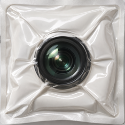
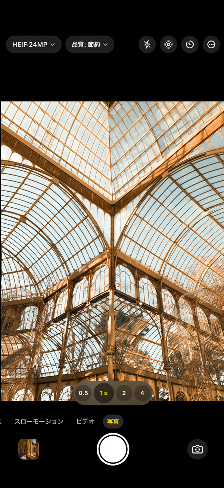
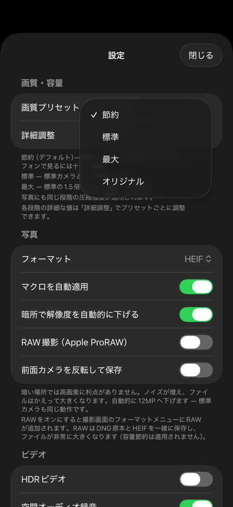
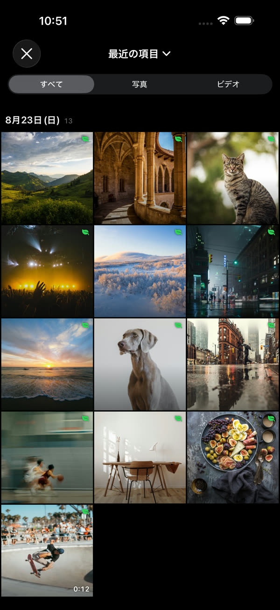
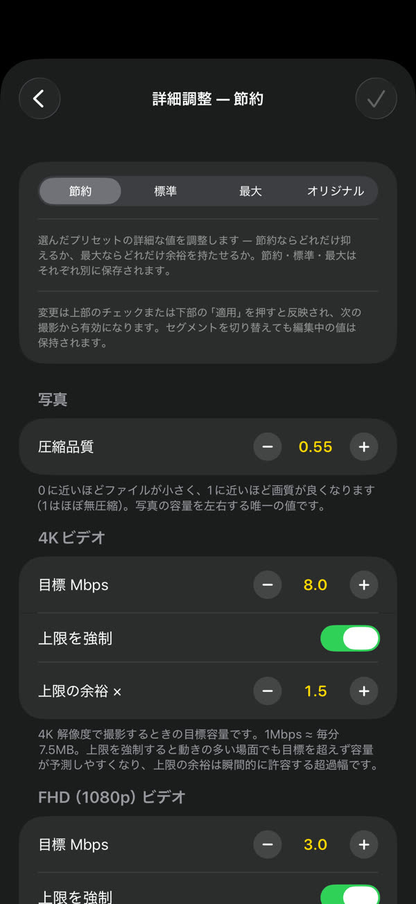
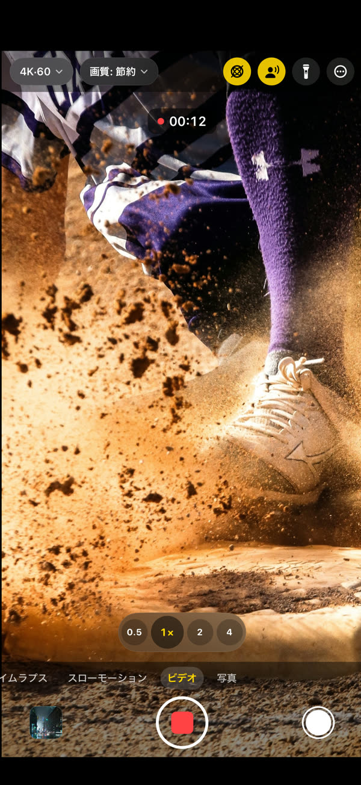

GramCamera は標準カメラと同じように撮りながら、保存するときの容量を抑えるカメラです。画質を目に見えて落とさずにファイルを小さくするので、同じ空間により長く残せます。
App StoreからダウンロードiOS 17 以降 · iPhone および iPad





節約・標準・最大の3段階。詳細調整では解像度ごとの目標容量まで調整できます
独自のライブラリは作りません。撮影した写真と動画は標準の写真アプリに保存されます
撮影ごとに、標準カメラで撮った場合と比べてどれだけ小さいかを確認できます
写真・動画・スローモーション・タイムラプス、4K 60fps、HDR動画、空間オーディオ、レンズ切替とマクロ
撮影物は端末と写真ライブラリにのみ残ります。アカウントもログインも不要です — プライバシー